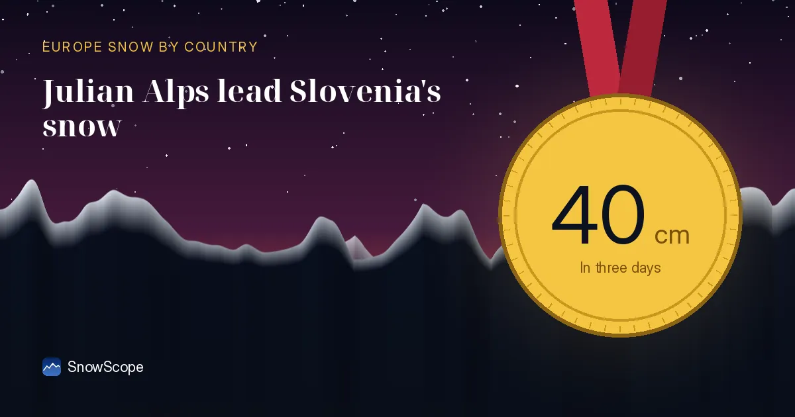
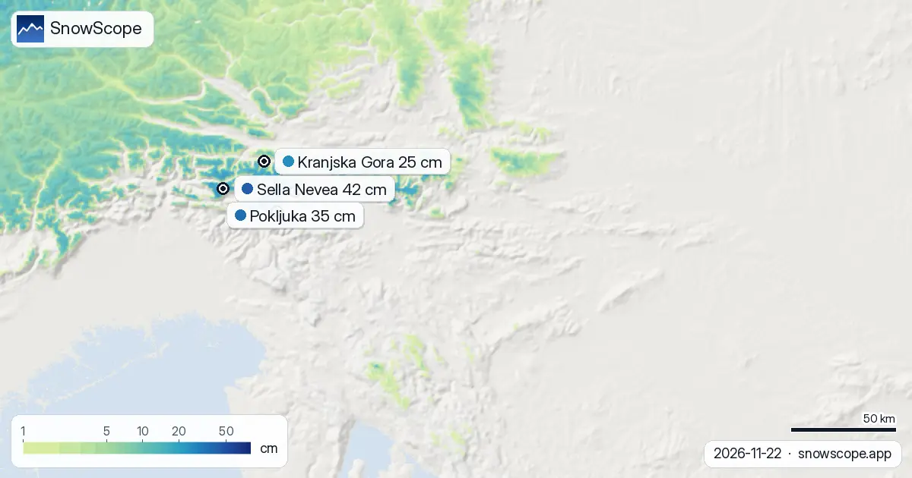

Julian Alps lead Slovenia's snow: 40 cm in three days
In the past three days, snow fell unevenly across Slovenia. The Julian Alps caught the heaviest snow, while lower mountains and foothills saw little or none.
See the live snow forecast for Sella Nevea in the SnowScope appSnow depth, powder alerts and the 3D map, free.
Three ranges, three different stories
When I look at where the snow fell, the pattern is sharp. The Julian Alps, in the north-west, took 40 cm in the last three days. The Kamnik-Savinja Alps, running east of there, received 31 cm. Pohorje, further south and lower, got only 12 cm. The same storm system moved over all three, but height made the difference.
This is typical for Slovenia in autumn. Moist air from the south hits the high ranges first and loses its snow there. By the time it reaches lower ground, it has less to give. Right now, 26 per cent of the region is white, but almost all of it is above 1500 metres.
| Resort | Snow depth | New snow, 72 h | Coming, next days | Top |
|---|---|---|---|---|
| Sella Nevea | 42 cm | 26 cm | 25 cm | 2,137 m |
| Pokljuka | 35 cm | 31 cm | 22 cm | 1,564 m |
| Vogel | 32 cm | 33 cm | 26 cm | 1,731 m |
| Kranjska Gora | 25 cm | 18 cm | 18 cm | 1,568 m |
| Golte | 25 cm | 13 cm | 12 cm | 1,570 m |

Where the snow sits today
Above 1500 metres, the snow is real: 18 cm on average between 1500 and 2000 metres, and 35 cm above 2000 metres. Both bands are fully covered. Below 1500 metres, it thins fast. Between 1000 and 1500 metres, you will find only 2 cm on average, and snow covers just 60 per cent of the land. Below 1000 metres, almost nothing remains.
The snow line sits around 1200 metres today. That means most ski runs in the lower resorts are bare or will show stone through thin cover. At Sella Nevea, which sits highest at 2137 metres, snow depth is 42 cm. At Pokljuka, 1564 metres, it is 35 cm. At Kranjska Gora, only 1568 metres but catching less fresh snow, it is 25 cm.

Resorts: depth versus fresh fall
The deepest snow is at Sella Nevea, 42 cm. It also caught the most fresh snow in three days, 26 cm. But Vogel, which sits higher at 1731 metres, picked up 33 cm of new snow and now holds 32 cm. Pokljuka received 31 cm of fresh fall in three days, the second-highest, and has 35 cm on the ground. These three are the only resorts with usable depth right now.
Kranjska Gora and Golte both sit around 1570 metres but face a harder time. Kranjska Gora has 25 cm and saw only 18 cm of new snow. Golte received 13 cm and holds 25 cm. Both caught the edge of the heaviest falls. Of the 27 ski areas we track in Slovenia, 16 now report some snow cover, but most of it lies above the main runs.
What comes next
More snow is on the way. The forecast shows 23 cm possible in the next three days, with 23 November as the snowiest day. That is not a large amount for one day, but it will help. In the week ahead, up to 37 cm could fall. In the second week, from 30 November to 6 December, only 14 cm is expected, so the next ten days are your best window for accumulation.
The Julian Alps should see the heaviest snow again next week. If you are planning to ski, aim for dates around 25 November and into the first week of December. Lower resorts will benefit from each fall, but runs above 1500 metres will always have the best base.
How this season is shaping up
Three weeks ago, only 1110 km² of Slovenia's ski terrain held snow. Yesterday, that was 750 km². Today it is 1880 km², a jump of 1130 km² in one day. Early season snow is fragile and often patchy.
Compared to past winters, Sella Nevea is well ahead of normal for late November. It holds 42 cm against a typical 4 cm this date, nearly nine times the usual amount. Pokljuka, Vogel, Kranjska Gora and Golte are also above normal. But for a full season to build, Slovenia needs consistent falls through December and January. These first weeks matter, but they are only the start.
Mountain reading
If you plan to ski off the main runs in coming days, check the latest avalanche bulletin from the official Slovenian service. Fresh snow on steep slopes always carries risk, especially when it falls fast. The snow is still settling in the high mountains. Wait a few days for it to stabilize, or stick to marked runs where the base is building.
Use the SnowScope app to track depth and forecast changes at your chosen resort. The mountains here move fast in autumn. In a week, the picture could change again.
Tips for skiers
- Aim for the Julian Alps and Kamnik-Savinja Alps resorts—Sella Nevea, Pokljuka, and Vogel—where fresh snow is deepest and new snow is thickest on the ground.
- Stay above 1500 metres if you want continuous snow cover; below that height, runs are thin and stones may show through, especially on south-facing slopes.
- Watch the forecast for 25 November and the first week of December, when the next significant snow is due. Early season snow can shrink fast in warm spells.
- Check the official Slovenian avalanche bulletin before heading off-piste. Fresh snow of 30 cm or more on steep terrain can be unstable for several days after it falls.
- Lower resorts like Kranjska Gora and Golte will improve as more snow falls, but they remain secondary until November passes and December snow sets a deeper base.
About these numbers
Resort snow depths are the deepest snow on the resort's upper slopes on the date shown; they are estimates for an area, not a measurement at one point. Forecasts can change. Always read the official avalanche bulletin before going off-piste.
Cite this report
For research, teaching or the press: the numbers and charts are free to reuse under CC BY 4.0 with this citation.
SnowScope (2026), Julian Alps lead Slovenia's snow: 40 cm in three days, https://snowscope.app/blog/en/2026/11/slovenia-where-the-snow-fell-22-november-2026.html, accessed 2026-11-22
SnowScope (Atlas Labs). (2026, November 22). Julian Alps lead Slovenia's snow: 40 cm in three days. SnowScope snow reports. https://snowscope.app/blog/en/2026/11/slovenia-where-the-snow-fell-22-november-2026.html
BibTeX
@misc{snowscope2026sloveniawherethesnowfell,
author = {{SnowScope (Atlas Labs)}},
title = {Julian Alps lead Slovenia's snow: 40 cm in three days},
year = {2026},
month = nov,
howpublished = {\url{https://snowscope.app/blog/en/2026/11/slovenia-where-the-snow-fell-22-november-2026.html}},
note = {Published 2026-11-22 12:52 UTC; accessed 2026-11-22}
}· CC BY 4.0 · Methods, data and tools →
Sella Nevea: snow and temperature by height, this winter vs last (tools) →
Follow Sella Nevea
Free: a message when fresh snow is coming, and the forecast every morning.
More snow reports

Tornik on Zlatibor had up to 39 cm on its upper slopes on 15 November 2026; by Wednesday it had melted. Kopaonik barely turned white. The week day by day and what comes next.

Savin Kuk above Žabljak picked up 22 cm of snow from 13 to 19 November and still has 6 cm today. Kolašin 1450 and 1600 are bare. The week day by day, and the next chances.

Up to 30 cm of snow fell on northern Velebit and Bjelolasica on Friday 13 November 2026. By Tuesday it was gone. Day by day, what the mountains kept, and when snow comes back.